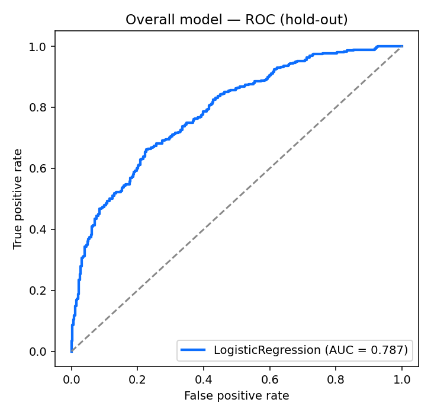
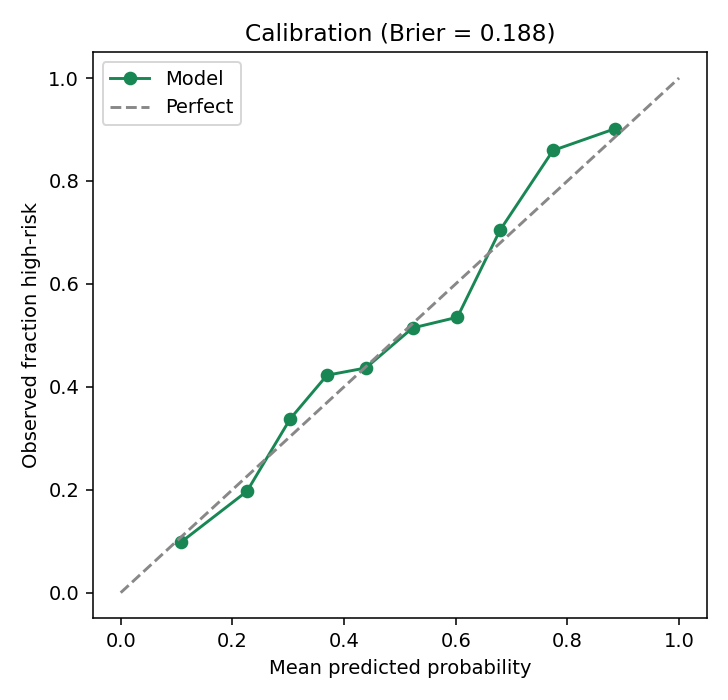
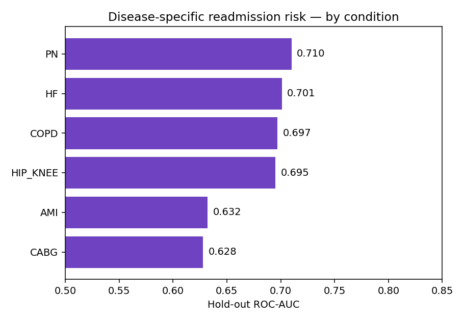
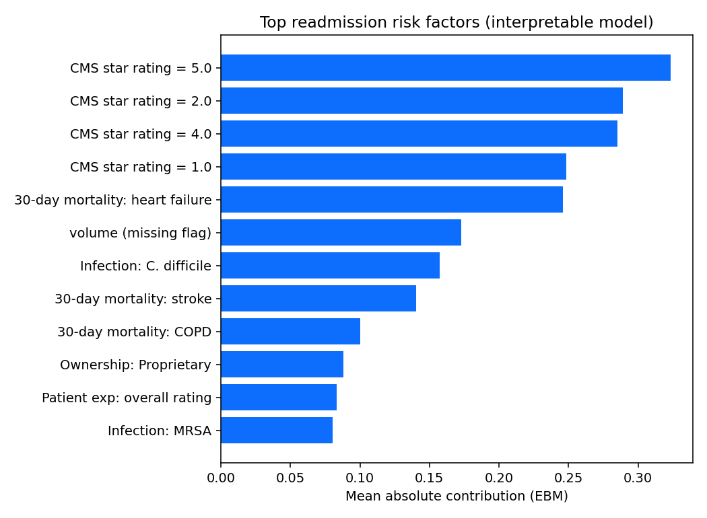

An interpretable, leakage-free machine-learning system that stratifies 2,800+ U.S. hospitals by their risk of excess Medicare readmissions, using only publicly available CMS Care Compare data — so quality-improvement resources reach the facilities that need them most.
Reducing them is an explicit national priority — codified in federal law and tied to billions of dollars in Medicare payments every year.
Estimated annual Medicare spending on hospital readmissions, with roughly $17 billion tied to returns considered potentially avoidable.
30-day adult hospital readmissions in the U.S., at an average cost of about $15,200 each (HCUP, 2018).
Hospitals evaluated under the CMS Hospital Readmissions Reduction Program received a payment penalty in FY2025 (penalties up to 3% of Medicare payments).
Congress created the Hospital Readmissions Reduction Program (HRRP) under the Affordable Care Act (2010) to reduce avoidable readmissions. Yet hospitals, payers, and regulators still lack transparent, interpretable tools to see which facilities are most at risk and why — using data that is already public. This project addresses that gap.
The system predicts which hospitals carry elevated readmission risk — a decision-support tool for health systems, payers, and policymakers — rather than profiling individual patients. The primary model is an Explainable Boosting Machine, a glass-box model whose every prediction can be traced to specific, clinically meaningful factors.
Built entirely from five public CMS Care Compare datasets — readmissions, hospital characteristics, patient experience (HCAHPS), healthcare-associated infections, and mortality/complications. No protected health information is used, so the method is reproducible by any researcher or regulator.
Every input that mechanically defines the readmission ratio (predicted/expected rates, raw readmission counts, CMS readmission-group scores) is deliberately excluded. The model earns its accuracy from independent quality signals — mortality, infections, patient experience, and volume — not from circular reasoning.
Beyond an overall score, the system builds six condition-specific models (heart attack, heart failure, pneumonia, COPD, CABG surgery, hip/knee replacement). Disease models are validated with group-aware splitting so a hospital never appears in both training and test data — preventing optimistic bias.
All figures below are generated directly from the modeling pipeline on current CMS data and load live from the model's result files.
Cross-validated ROC-AUC of the best model . Up from the project's earlier published baseline of ~0.72.
Brier score (lower is better) — the model's risk probabilities are well calibrated, so a "70% risk" really means about 70%.
ROC-AUC using only the CMS overall star rating. The full model's added clinical features lift performance well beyond it.


| Model | ROC-AUC | Relative |
|---|
Repeated stratified 5-fold cross-validation across the full cohort. The interpretable model is competitive with the strongest black-box ensembles — accuracy without sacrificing transparency.
The same hospital can excel at joint-replacement recovery yet struggle with heart-failure transitions. Condition-level models let quality teams target the right service line.

| Condition | Hospitals (test) | ROC-AUC |
|---|
Single-condition ratios are noisier than an averaged score, so condition-level AUCs are lower than the overall model — an honest reflection of the harder, more actionable task. Heart failure and pneumonia, the highest-volume conditions, are the most predictable.

After the CMS star rating, the strongest predictors of excess readmissions are independent clinical-quality signals that the model adds:
In short: hospitals that struggle with broad clinical quality and care transitions also tend to readmit more — a pattern the model quantifies transparently, and one that survives removing the CMS star rating entirely (see the ablation in the research repository).
Adjust a hospital's clinical-quality profile — patient experience, safety, and infections — and watch its predicted probability of excess readmissions respond. Every slider moves risk in the clinically expected direction. This runs the exported logistic model entirely in your browser; no data leaves your device.
This calculator deliberately uses the actionable clinical levers rather than the CMS star rating (a composite that already bundles these signals together). It illustrates the drivers of risk; the full model — which adds the star rating — reaches the higher accuracy reported above.
Probability that this hospital's average Excess Readmission Ratio is ≥ 1.0 (readmitting more than expected for its case mix).
Educational decision-support demonstration based on facility-level public data. It is not a medical device and must not be used for individual patient care or clinical decisions.
Search any hospital in the study cohort to see its modeled readmission-risk score and CMS profile.
Modeled risk reflects facility-level patterns in public CMS data and is a quality-improvement signal, not a verdict on any hospital. “Mean ERR” is the hospital's average Excess Readmission Ratio across reported HRRP conditions.
Healthcare data scientist and senior data analyst focused on applying interpretable AI to clinical-quality and population-health problems, and a doctoral researcher in artificial intelligence.
This project is part of a broader body of work using transparent machine learning to make the U.S. healthcare system safer, more efficient, and more accountable with the data it already collects.
Research artifacts, methodology, and reproducible code are maintained in a companion repository. Contact details are available on request.
Five public CMS Care Compare datasets (HRRP readmissions, Hospital General Information, HCAHPS, Healthcare-Associated Infections, Complications & Deaths), current as of the 2026 refresh. The modeling target is facility high-risk status, defined as an average Excess Readmission Ratio ≥ 1.0 across reported HRRP conditions.
This is a facility-level risk-stratification and quality-improvement tool, not a patient-level clinical predictor. It reflects associations in administrative data, does not establish causation, and does not yet incorporate social determinants of health — an important direction for future work. It is research software, not a certified medical device.